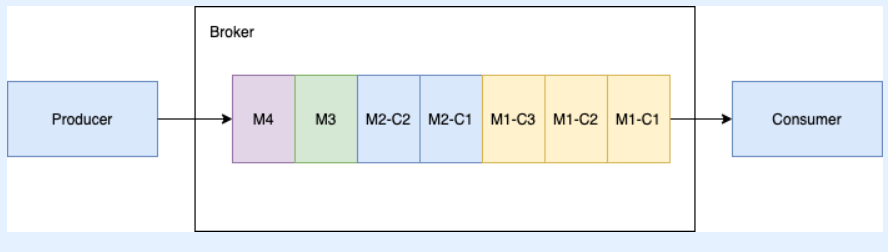
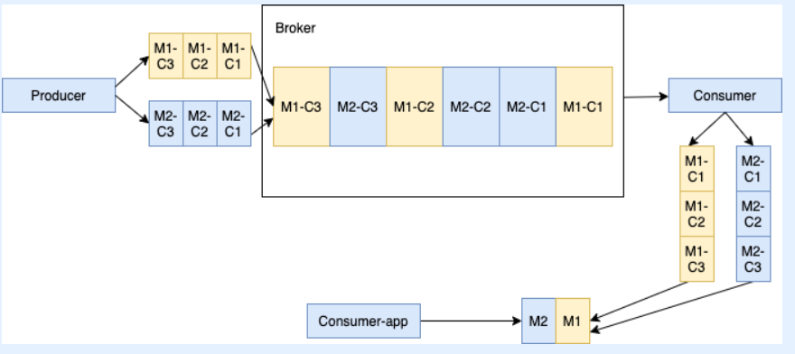
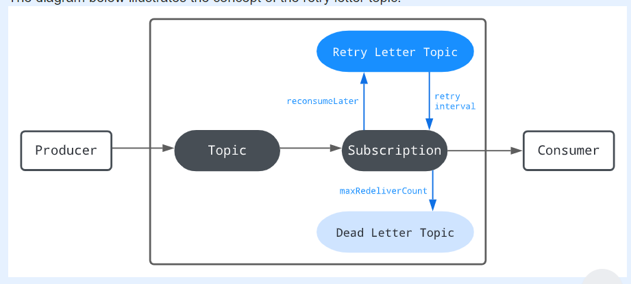
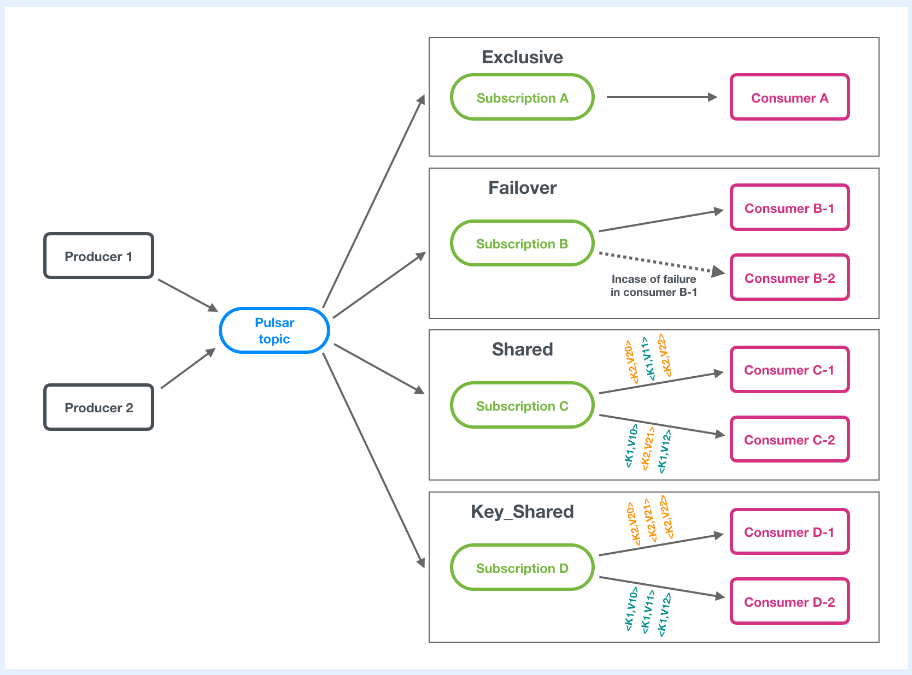
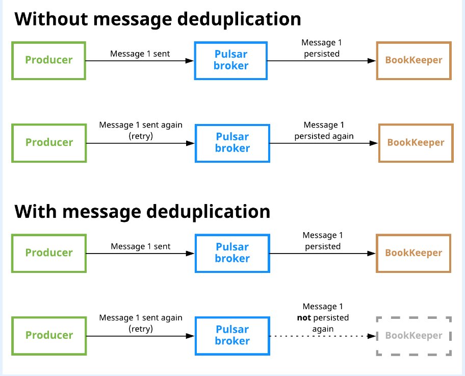
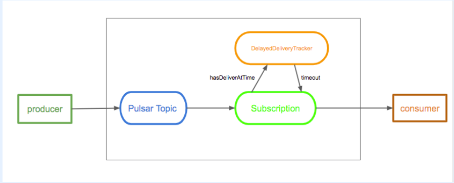

Pulsar消息
简介
Pulsar基于发布订阅模式。在该模式下，生产者往topics中生产消息，消费者订阅这些topics，处理即将到来的消息，处理完成够向broker发送ack。
当一次订阅创建后，Pulsar会存储所有的消息(使用BookKeeper)。消息的删除仅在消息被消费者处理后，并向broker发送ack，broker收到ack之后才会被删除。
消息的组成
| 组件 | 描述 |
|---|---|
| Value/data payload | 消息携带的数据部分 |
| Key | 消息的key |
| Properties | key/value map存储用户定义的属性 |
| Producer name | 当前消息的生产者，不指定则使用默认名字 |
| Topic name | 消息要发送到哪个topic下，只有订阅了这个topic的消费者才能收到通知 |
| Schema version | 消息生产时schema的版本 |
| Sequence ID | 每一条发送到某个topic的消息都有它自己的顺序。Sequence ID初始状态下是由生产者分配的，表示消息在序列中的顺序，可以被自定义。Sequence ID可以用作消息去重。如果brokerDeduplicationEnabled 指定为true，则在一个topic(前提是topic没有经历分区)下，每一条消息的sequence ID都是唯一的。 |
| Message ID | 当消息被持久化存储时，bookies给消息分配了消息ID。Message ID表示了在一个ledger中的位置，并且在一个Pulsar cluster中是唯一的。 |
| Publish name | 消息被发送的时间戳，有生产者自动生成 |
| Event time | 一个可选的时间戳，由应用程序添加到消息上。 |
默认的消息大小是5MB。但是可配置
在broker.conf文件中
# The max size of a message (in bytes).
maxMessageSize=5242880
在bookkeeper.conf文件中
# The max size of the netty frame (in bytes). Any messages received larger than this value are rejected. The default value is 5 MB.
nettyMaxFrameSizeBytes=5253120
消息生产者(Producer)
生产者是一个attach到某一个topic下，能发送消息给Pulsar broker的进程。
producer支持消息的异步发送和同步发送。
- 同步发送：
producer在发送每一个消息之后都会等待broker返回ack消息。如果producer没有接收到ack，它就认为自己发送失败了。 - 异步发送：
producer将消息放到一个阻塞队列中，并且立即返回，不需要等待broker的ack。当队列满了，produce进程会被阻塞，或者返回失败信息。
生产者对topic的访问模式
Shared: 多个生产者可以发布消息到同一个topic上Exclusive: 只能有一个生产者可以发布消息到topic上。如果有一个生产者连接在一个topic上，其他的生产者进行连接时会得到error。如果旧的生产者和broker被划分到不同的网络分区中，那么旧的生产者就会被回收，此时新的生产者会被attcch到该broker的topic上。WaitForExclusive: 新的生产者对象会挂起等待直到拥有对topic的Exclusive访问权限。
消息压缩
支持四种类型的压缩：
- LZ4
- ZLIB
- ZSTD
- SNAPPY
Batching(批处理)
- 当批处理被激活，生产者可以在单次请求中发送
一批消息(batch)。 - 批处理大小由消息的最大数量和最大发布延迟(
publish latency)决定,因此,backlog的大小表示是batch的数量，额不是消息的数量。 - 在
Pulsar中，追踪和存储的单位是batch而不是消息。消费者接收到batch之后会将batch拆成消息，时间调度相关的消息(通过deliverAt和deliverAfter配置的消息会以消息为单位进行发送)除外。 - 一个
batch中的所有消息被消费者处理并向broker发送ack之后才会认为这个batch才能是ack状态。发生异常情况会导致整个batch被重传。 - 为了避免重传整个
batch,从Pulsar 2.6.0开始就引入了batch ack 索引。broker追踪一个batch中的所有索引，那些状态为unack状态的消息才会被重传。 batch ack索引可以通过设置acknowledgmentAtBatchIndexLevelEnabled=true来激活。
Chunking
Chunking机制使得Pulsar能够在生产者端将那些超级大的消息拆分成一个一个片段，然后在消费者端再重新将这些拆分后的片段重新组合起来。整个工作流如下：
- 生产者将原始消息拆分成一段一段的消息，并将这些段消息(这些段消息会带上一个额外的
chunck元数据，表示段与段之间的衔接关系)按顺序发送给broker。 broker将这些段消息存到manager-ledger中，并使用chunkedMessageRate参数来在topic上记录消息速率。- 当消费者接收到所有的
chuncked消息，消费者会缓存这些chuncked消息，并将它们合并起来，放到自己的接收者队列中。 - 客户端消费者从队列中取出整个拼接的消息进行处理。
该模式也存在些许不足支持：
Chuncking只能用于持久化topics。Chuncking只在订阅类型为exclusive和failover时才有效。Chuncking不能和batching同时使用。
以下介绍几种处理chucked消息的场景
使用一个消费者处理连续的块消息。

- 生产者将
M1消息分成三个消息块：M1-C1,M1-C2,M1-C3。 broker将三个消息块存到managed-ledger中，并以相同的顺序将它们发给消费者- 消费者在收到所有的消息块中会在内存中缓存这些消息块，然后组装成原始的消息(即
M1消息)，然后再由客户端进行处理。
使用一个消费者处理相互间隔的块消息

- 当出现多个生产者往同一个
topic发送那些大消息时，如图中M1-C3 M1-C2 M1-C1与M2-C3 M2-C2 M2-C1所示，消费者也会将其拆成一个个的块消息(即生产者1会将消息拆成M1-C1,M1-C2,M1-C3;生产者2会将消息拆成M2-C1,M2-C2,M2-C3)，发送给broker。 - 此时
broker接收的消息块的顺序就有可能是图中所示的这种情况：M1-C3 M2-C3 M1-C2 M2-C2 M2-C1 M1-C1。 - 消费者端会根据这些块消息中携带的
chunck metadata对这些块消息进行重组，还原出原来完整的M1消息和M2消息。 - 然后将
M1消息和M2消息交付给客户端进行处理。
激活Chuncking功能
- 首先，设置
enableBatching为false - 然后再设置
chunkingEnabled为true
Consumers
Consumer(消费者)是订阅某个topic的进程，用来处理接收到的消息。
一个Consumer向broker发送flow permit request来获取消息。消费者端有一个队列来存储从broker接收到的消息。可以通过receiverQueueSize来配置队列大小。每一次consumer.receive()函数被调用，一个消息就从队列中取出。
接收模式
- 同步接收：当取不到消息时，接收函数会阻塞
- 异步接收：接收函数会立即返回，接收过程会异步处理
Listeners
客户端库会为consumer提供监听实现接口。以Java库为例,会有一个MessageListener接口，当接收到新消息时，该接口会调用receive函数。
Acknowledgement
消费者在成功处理一条消息之后，会发送acknowledgement request给broker。然后这个消息会持久化存储下来，之后只有在所有的订阅者都发送给broker acknowledgement request之后，这条消息才会被删除。
消息的确认(这里的确认的意思是指消费者发送ack给broker，broker接收到ack这个过程)有两种方式：
- 单条确认：如上所述。调用api:
consumer.acknowledge(msg); - 累计确认：消费者只需要确认最后一条接收到的消息。调用api:
consumer.acknowledgeCumulative(msg);，这种模式下的确认不能用于Shared 订阅类型,该订阅类型的消息只能是单条确认的方式。
Negative acknowledgement
negative acknowledgement使得消费者在发生无法消费(比如超时)broker发来的消息，并且自己想要再次消费时，就会向broker发送一个negative acknowledgement (nack)请求，让broker再发一次。
同Acknowledgement类似,Negative acknowledgement也有累计确认和单条确认，同样取决于订阅类型，“累计确认：Exclusive、Failover,单条确认：Shared、Key_Shared”。
需要在acknowledgment超时之前发送Negative acknowledgement。
Acknowledgement timeout
设置消费者追踪unacknowledged消息的时间间隔。当Acknowledgement timeout(ackTimeout)时间到了,消费者会发送redeliver unacknowledged messages给broker，这样broker才会向consumer重发消息。
Retry letter topic

重试机制允许：当消费端对某个消息消费失败，消费者可以将消息归到Retry Letter Topic中，并不断发起重试，要求broker重新发送消息,到达最大重试次数之后，消息还是未能被consumer正常消费，会将该消息放到Dead Latter Topic中来手动处理。
重试机制和delayed message delivery最根本的不同是，重试机制能够保证消息不丢失，而delayed message delivery只是延迟发送消息而已。
默认情况下，自动重试是开启的。
Retry letter topic的格式为：
topicname>-<subscriptionname>-RETRY
Java端的调用模式如下：
Consumer<byte[]> consumer = pulsarClient.newConsumer(Schema.BYTES)
.topic("my-topic")
.subscriptionName("my-subscription")
.subscriptionType(SubscriptionType.Shared)
.enableRetry(true)
.deadLetterPolicy(DeadLetterPolicy.builder()
.maxRedeliverCount(maxRedeliveryCount)
.retryLetterTopic("my-retry-letter-topic-name")
.build())
.subscribe();
Dead letter topic
对于重试失败的消息，会放到这个topic下,可以定义行为进行处理。
Consumer<byte[]> consumer = pulsarClient.newConsumer(Schema.BYTES)
.topic("my-topic")
.subscriptionName("my-subscription")
.subscriptionType(SubscriptionType.Shared)
.deadLetterPolicy(DeadLetterPolicy.builder()
.maxRedeliverCount(maxRedeliveryCount)
.deadLetterTopic("my-dead-letter-topic-name")
.initialSubscriptionName("init-sub")
.build())
.subscribe();
Topics
Topic的格式：
{persistent|non-persistent}://tenant/namespace/topic
persistent|non-persistent: 默认是persistent,消息会被存在磁盘上。non-persistent：消息不存在磁盘上。tenant: 一个Pulsar实例中有多个tenants,可以跨集群传播。一个tenant可以有一个或者多个namespace。namespace: 命名空间，一组相关的topics放在一个namespace下面。topic: 生产者和消费发送的消息发到topic中。
如果一个tenant下有多个app,可以按下面的方式创建命名空间：my-tenant/app1、my-tenant/app2。
Subscriptions
Subscription types
一个subscription本质上是一个命名的配置规则，该规则定义了消息是如何发送给消费者。在Pulsar中有四种订阅规则:exclusive，shared，failover，key_shared,我的文章Pulsar术语对这四种规则描述过。下面给出一张总的描述图：

exclusive: 对于某个主题，只允许一个消费者进行订阅，当这个消费者不再订阅了，才允许其他消费者进行订阅。这种模式的订阅，所有消息只能由一个消费者接收处理(除非它不再订阅了)。shared：对于某个主题，可以被多个消费者订阅。这种模式的订阅会导致消息会被发送给不同的消费者。Pulsar会执行round robin算法来决定消息被发送给多个消费者中的哪一个进行处理。这种模式的缺点是：- 无法保证消息顺序。
- 不能使用累计确认的方式(因为连续顺序的消息被发送到不同的消费者去了)。
failover：区分主消费者和其他消费者。当主消费者失去连接的时候，broker会将那些发送个主消费者但是还没有收到ack的消息发给其他消费者进行处理。- 对于
分区topic,broker会根据优先级和消费者的字典序来对消费者进行排序。然后broker会将topic分配给优先级最高的消费者。 - 对于
未分区topic,broker会按顺序选择一个消费。
- 对于
key_shared: 对于某个主题，可以被多个消费者订阅。具有相同key的消息会被发送给同一个消费者处理。使用这种模式的订阅在使用batch时需要使用key-based batching而不是batching。
Subscription modes
subscription mode描述了cursor的类型：
- 当一个订阅被创建后，一个与之相关联的
cursor就会被创建，该cursor用来记录最后一次消费的消息的位置，即最后一个被broker确认的消息位置。 - 当某个订阅的消费者重启时，它可以从上一次处理中恢复过来(意思是：上一次停机时处理到
消息X,消息X已被broker确认,重启后从消息X+1处理,其中X是序号)
可分为：
Durable:默认行为。cursor不会丢失，重启时可读，消息处理过程可恢复。NonDurable:cursor会丢失，消息处理过程不可恢复。
Java API设置模式
Consumer<byte[]> consumer = pulsarClient.newConsumer()
.topic("my-topic")
.subscriptionName("my-sub")
.subscriptionMode(SubscriptionMode.Durable) //SubscriptionMode.NonDurable
.subscribe();
Multi-topic subscriptions
消费者的默认订阅地址：persistent://public/default/my-topic
自定义指定订阅多个主题：persistent://public/default/finance-.*,正则表达式指定多个地址。
Partitioned topics
分区消息。topics由一个broker提供服务的场景不足以支持高吞吐量的业务场景。所以需要引入Partitioned topics这种模式，让某个topic可以由多个broker提供服务，提高系统的吞吐量。
 如图所示，一个完整的
如图所示，一个完整的Topic1被拆分成5个分区，从P0到P4。其中P0和P3分区被分配给Broker1，P1和P4分区被分配给Broker2，P2分区被分配给Broker3,这样一个完整的Topic1就由三个broker来提供服务。
rounting mode(路由模式)决定了每一次消息需要发送到哪一个分区，subscription type决定了哪些消息被发送到哪个消费者。
Rounting modes
有以下几种模式
RoundRobinPartition:- 如果没有为消息指定
key，生产者会采用round-robin算法来决定将消息发送给所有分区中的哪一个。 - 如果为消息指定了
key，生产者会对key进行hash处理，然后将消息分配给特定的分区。这是默认模式.
- 如果没有为消息指定
SinglePartion:- 如果没有为消息指定
key，生产者会随机选择一个分区，并将消息全部发送给该分区 - 如果为消息指定了
key，生产者会对key进行hash处理，并将消息全部发送给该特定的分区
- 如果没有为消息指定
CustomPartition: 指定特定的消息由特定的分区来处理。
Ordering guarantee
参见pulsar-message-Ordering guarantee
Non-persistent topics
不能持久化的消息无法抵御意外情况(比如宕机、重启)的发生,对于那些需要需要持久化的消息用persistent topics，比如由消费者处理同时需要记录该是否被正常消费的消息,像那些不需要持久化的消息用Non-persistent topics,比如broker与consumer之间关于消息是否正常处理的ack消息。
System Topic
Message redelivery
Pulsar使用该机制来确保系统发生意外情况(比如宕机)时消息不会丢失。
激活以下三种方式来进行消息的重传：
Negative AcknowledgeAcknowledgement TimeoutRetry letter topic
Message retention and expire
参见我的文章Pulsar消息保留与过期策略
Message deduplication
消息去重。当一条消息被Pulsar持久化不止一次就会产生重复消息。Message deduplication可以保证每一条消息只被处理一次，即使消息被收到不止一次。下图展示了消息去重和不去重的区别：

Producer idempotency
译为：生产者幂等性。另外一种消息去重的方法就是保证生产者在生产同一条消息的时候只生产一次，这种方法也叫生产者幂等性。该方法的缺点就是将消息去重的工作交给了应用程序。在Pulsar中，去重的工作是由broker完成的，因此无需修改客户端代码。
详细的关于消息去重的详见Message deduplication
Delayed message delivery
延迟消息的发送。在消息发送给broker之后，Pulsar设计了一个DelayedDeliveryTracker用来维护时间值,等待该时间值过期，broker才会将消息发送给消费者。消息的延迟发送只能在Shared订阅模式下使用(有效)。

默认情况下，延迟发送是开启的。
「如果这篇文章对你有用,请随意打赏」
 YinChao's Blogs
YinChao's Blogs
如果这篇文章对你有用,请随意打赏
使用微信扫描二维码完成支付

comments powered by Disqus